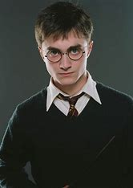

Biografia Harry Potter

Harry Potter é um personagem fictício criado pela autora britânica J.K. Rowling e não possui uma biografia real. No contexto da história, Harry Potter nasceu em 31 de julho de 1980, em Godric's Hollow, Inglaterra. Ele ficou órfão quando era bebê, após seus pais, Lily e James Potter,
serem assassinados pelo bruxo das trevas Lord Voldemort.
Ao longo da série de livros e filmes, Harry se torna um bruxo famoso por sobreviver à maldição mortal lançada por Voldemort.
Ele é criado pelos tios, os Dursley, até receber sua carta de aceitação para a Escola de Magia e Bruxaria de Hogwarts aos 11 anos.
Em relação a cônjuge e filhos, ao final da série e de acordo com o epílogo do último livro, "Harry Potter e as Relíquias da Morte",
Harry se casa com Ginny Weasley e tem três filhos: James Sirius, Albus Severus e Lily Luna Potter.
A série não explora muito a vida adulta de Harry após os eventos principais, mas esse epílogo fornece um vislumbre de sua vida familiar futura.
Ler sobre mais personagens